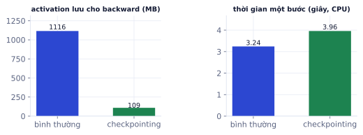
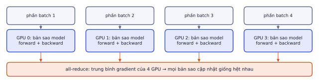
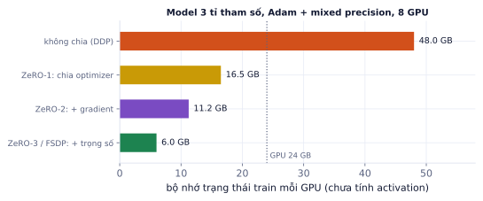

Bài 1
Batch hiệu dụng
tính tay8 mẫu mỗi GPU mỗi bước, 4 GPU, tích lũy gradient 4 bước.
Lời giải
8 × 4 × 4 = 128. Muốn giữ batch hiệu dụng khi đổi số GPU, đổi số bước tích lũy tương ứng.
Mọi model bạn đã train đều vừa một GPU. LLM thật có hàng tỉ tham số, train trên hàng nghìn GPU trong nhiều tuần. Bài này dạy các kỹ thuật cho phép train lớn hơn bộ nhớ một GPU và nhanh hơn nhờ nhiều GPU: mixed precision, gradient accumulation, gradient checkpointing, DDP, FSDP/ZeRO, và cách lập kế hoạch tính toán bằng scaling law. Các kỹ thuật chính đều có kiểm chứng bằng code chạy thật (kể cả DDP trên 2 tiến trình).
Ngay cả khi bạn không train LLM từ đầu, fine-tune model 7B toàn bộ, train model video, hay chỉ train nhanh hơn trên 2 GPU Kaggle miễn phí đều cần các kỹ thuật này. Trong phỏng vấn (đặc biệt vị trí nghiên cứu), câu hỏi "model X cần bao nhiêu bộ nhớ để train, chia thế nào" rất phổ biến, và trả lời được bằng phép nhân.
Với Adam và mixed precision, mỗi tham số tốn khoảng 16 byte cho trạng thái train:
| Thành phần | Byte/tham số | Vì sao cần |
|---|---|---|
| Trọng số bf16/fp16 | 2 | dùng trong forward/backward |
| Gradient bf16/fp16 | 2 | kết quả backward |
| Bản trọng số chính fp32 | 4 | cộng những cập nhật rất nhỏ mà fp16 làm tròn mất |
| Adam: m và v (fp32) | 8 | trung bình động của gradient và bình phương gradient |
Cộng thêm activation: kết quả trung gian của forward, phải lưu lại để backward tính gradient. Activation tỉ lệ với batch × độ dài chuỗi × số lớp × chiều ẩn, và với chuỗi dài thường lớn hơn cả trạng thái.
Model 3 tỉ tham số:
Train cần gấp khoảng 8 lần bộ nhớ so với chạy, chưa tính activation. Đây là lý do LoRA/QLoRA (P6.1) phổ biến: chỉ vài chục triệu tham số cần gradient và trạng thái Adam.
Tính forward/backward ở 16 bit (bf16 trên GPU mới, fp16 trên T4 kèm loss scaling), giữ bản trọng số chính fp32. Nhanh hơn (tensor core) và giảm bộ nhớ activation một nửa. Đã dùng ở P2.3 với torch.autocast.
Muốn batch 128 nhưng chỉ vừa 16? Chạy 8 lần forward/backward, cộng dồn gradient, rồi mới optimizer.step().
import torch, torch.nn as nn
torch.manual_seed(0)
model = nn.Linear(16, 4); opt = torch.optim.SGD(model.parameters(), lr=0.1); loss_fn = nn.CrossEntropyLoss()
loader = [(torch.randn(8, 16), torch.randint(0, 4, (8,))) for _ in range(8)] # 8 micro-batch, mỗi cái 8 mẫu
accum = 4
opt.zero_grad()
for i, (x, y) in enumerate(loader):
loss = loss_fn(model(x), y) / accum # chia số bước tích lũy
loss.backward() # gradient cộng dồn vào .grad
if (i + 1) % accum == 0:
opt.step(); opt.zero_grad()
print(f"cập nhật sau micro-batch {i + 1}, batch hiệu dụng {accum * 8}")
cập nhật sau micro-batch 4, batch hiệu dụng 32 cập nhật sau micro-batch 8, batch hiệu dụng 32
Kiểm chứng: với một mạng nhỏ, gradient của 4 micro-batch 8 mẫu (mỗi loss chia 4) khớp gradient của một batch 32 mẫu, sai khác lớn nhất 1,9 × 10⁻⁸ (chỉ là sai số làm tròn). Quên chia 4 thì gradient lớn gấp đúng 4 lần, tương đương tăng learning rate 4 lần.
Batch hiệu dụng = batch mỗi bước × số bước tích lũy × số GPU.
Gradient accumulation với BatchNorm. BatchNorm tính thống kê trên từng micro-batch nhỏ, không phải batch hiệu dụng, nên kết quả khác batch lớn thật. Transformer dùng LayerNorm nên không bị; CNN có BatchNorm thì cần micro-batch không quá nhỏ (từ khoảng 16 trở lên) hoặc dùng GroupNorm.
Không lưu mọi activation, chỉ lưu đầu vào của mỗi khối; khi backward, tính lại forward của khối đó để lấy activation cần thiết. Đổi tính toán lấy bộ nhớ.
from torch.utils.checkpoint import checkpoint
class Net(nn.Module):
def __init__(self, n=6, d=256):
super().__init__()
self.blocks = nn.ModuleList(nn.Sequential(nn.Linear(d, 4 * d), nn.GELU(), nn.Linear(4 * d, d)) for _ in range(n))
def forward(self, x):
for block in self.blocks:
x = checkpoint(block, x, use_reentrant=False) # không lưu activation bên trong block
return x
# với model transformers: model.gradient_checkpointing_enable()
net, x = Net(), torch.randn(64, 256, requires_grad=True)
net(x).sum().backward() # backward tự tính lại forward từng block
print("gradient OK:", net.blocks[0][0].weight.grad.shape)
gradient OK: torch.Size([1024, 256])

DistributedDataParallel: mỗi GPU giữ một bản sao đầy đủ của model, xử lý một phần batch khác nhau; trong lúc backward, gradient được trung bình giữa các GPU (all-reduce), nên mọi bản sao cập nhật giống hệt nhau.

torchrun --nproc_per_node=2 train_ddp.py # 2 GPU trên một máy
Những điểm phải làm đúng trong script DDP:
dist.init_process_group(...): backend nccl cho GPU, gloo cho CPU.DistributedSampler để mỗi tiến trình nhận một phần dữ liệu khác nhau; gọi sampler.set_epoch(epoch) mỗi epoch để xáo trộn khác nhau.Đã chạy thử một script DDP tối giản trên CPU với 2 tiến trình (backend gloo): mỗi tiến trình nhận dữ liệu khác nhau, nhưng sau optimizer.step() trọng số của hai tiến trình giống hệt nhau.
Thông lượng tăng gần tuyến tính theo số GPU nếu kết nối giữa các GPU đủ nhanh. Hạn chế: model và trạng thái train phải vừa bộ nhớ một GPU.
Trong DDP, mỗi GPU giữ trọn bộ 16 byte/tham số, nghĩa là N bản sao giống nhau: lãng phí. ZeRO (DeepSpeed) và FSDP (PyTorch) chia trạng thái ra các GPU:
| Mức (ZeRO) | Chia giữa các GPU | Byte/tham số mỗi GPU (N GPU) |
|---|---|---|
| Không chia (DDP) | không | 16 |
| Stage 1 | trạng thái optimizer | 2 + 2 + 12/N |
| Stage 2 | + gradient | 2 + 14/N |
| Stage 3 / FSDP | + chính trọng số | 16/N |

Với Stage 3/FSDP, mỗi lớp được gom đủ trọng số từ các GPU ngay trước khi dùng rồi giải phóng. Tốn thêm băng thông giữa các GPU để đổi lấy khả năng train model lớn hơn nhiều lần. Trong thực tế bạn bật bằng cấu hình (Accelerate, DeepSpeed config, FSDP của PyTorch), không tự viết.
Model rất lớn còn cần thêm:
Model 3 tỉ tham số theo tỉ lệ Chinchilla:
"Thực tế 150 TFLOP/s" quan trọng: GPU quảng cáo nhiều hơn, nhưng hiệu suất thật khi train (MFU) thường chỉ 30–50% con số trên giấy.
Ghi nhớ: trước khi train lớn, tính bộ nhớ và số phép tính trên giấy. Thử chạy vài trăm bước ở quy mô nhỏ để đo thông lượng thật, rồi mới ước tính thời gian và chi phí.
| Kỹ thuật | Giải quyết | Giá phải trả |
|---|---|---|
| Mixed precision | nhanh hơn, activation nhỏ hơn | cần loss scaling với fp16 |
| Gradient accumulation | batch hiệu dụng lớn khi bộ nhớ ít | chậm hơn batch lớn thật một chút |
| Gradient checkpointing | activation nhỏ khoảng 10 lần | chậm khoảng 20–30% |
| DDP | nhân thông lượng theo số GPU | model phải vừa một GPU |
| ZeRO / FSDP | model lớn hơn bộ nhớ một GPU | thêm truyền thông giữa GPU |
| Scaling law | ước tính token, phép tính, thời gian | chỉ là ước lượng, cần đo thật |
| Thuật ngữ | Nghĩa |
|---|---|
| activation | kết quả trung gian lưu lại để backward |
| micro-batch / effective batch | batch mỗi lần forward / batch thật khi cập nhật |
| all-reduce | phép tính tổng (trung bình) gửi kết quả về mọi GPU |
| rank / world size | chỉ số tiến trình / tổng số tiến trình |
| NCCL / gloo | thư viện truyền thông GPU / CPU |
| ZeRO / FSDP | chia trạng thái optimizer, gradient, trọng số giữa các GPU |
| tensor / pipeline parallel | chia ma trận / chia các lớp giữa các GPU |
| FLOPs | số phép tính dấu phẩy động |
| MFU | model FLOPs utilization, tỉ lệ sức tính thật sự dùng được |
| Chinchilla scaling | khoảng 20 token cho mỗi tham số |
8 mẫu mỗi GPU mỗi bước, 4 GPU, tích lũy gradient 4 bước.
8 × 4 × 4 = 128. Muốn giữ batch hiệu dụng khi đổi số GPU, đổi số bước tích lũy tương ứng.
Model 1 tỉ tham số, 16 byte mỗi tham số (1 GB = 10⁹ byte).
16 GB không vừa GPU 16 GB khi cộng activation. ZeRO-3 trên 8 GPU: 2 GB mỗi GPU. Model 7B: 112 GB tổng, 14 GB mỗi GPU, vừa GPU 24–40 GB với activation và checkpointing.
Chọn kỹ thuật cho từng trường hợp:
Viết script train tối giản với DDP: khởi tạo process group, DistributedSampler, bọc model bằng DDP, chỉ rank 0 in log và lưu checkpoint. Chạy bằng torchrun.
# Cần máy có 2 GPU: lưu thành train_ddp.py rồi chạy torchrun --nproc_per_node=2 train_ddp.py
import os, torch, torch.distributed as dist
from torch.nn.parallel import DistributedDataParallel as DDP
from torch.utils.data import DataLoader, DistributedSampler, TensorDataset
def main():
dist.init_process_group("nccl")
rank, local = dist.get_rank(), int(os.environ["LOCAL_RANK"])
torch.cuda.set_device(local)
ds = TensorDataset(torch.randn(10000, 128), torch.randint(0, 10, (10000,)))
sampler = DistributedSampler(ds, shuffle=True)
dl = DataLoader(ds, batch_size=64, sampler=sampler)
model = DDP(torch.nn.Sequential(torch.nn.Linear(128, 256), torch.nn.ReLU(), torch.nn.Linear(256, 10)).cuda(), device_ids=[local])
opt = torch.optim.AdamW(model.parameters(), 1e-3)
for epoch in range(3):
sampler.set_epoch(epoch) # xáo khác nhau mỗi epoch
for x, y in dl:
x, y = x.cuda(), y.cuda()
loss = torch.nn.functional.cross_entropy(model(x), y)
opt.zero_grad(); loss.backward(); opt.step() # all-reduce gradient tự động
if rank == 0:
print(epoch, loss.item())
torch.save(model.module.state_dict(), "ckpt.pt")
dist.destroy_process_group()
if __name__ == "__main__":
main()
# chạy: torchrun --nproc_per_node=2 train_ddp.py
Dùng: ba kỹ thuật trên một GPU: gradient accumulation (chia batch lớn thành nhiều batch nhỏ), cách chia loss cho đúng.
Kiểm chứng bằng code: gradient của một batch 32 mẫu bằng gradient cộng dồn của 4 batch nhỏ 8 mẫu, nếu chia loss mỗi batch nhỏ cho 4. So với cách quên chia: gradient lớn gấp mấy lần?
import torch, torch.nn as nn
torch.manual_seed(0)
model = nn.Sequential(nn.Linear(10, 32), nn.ReLU(), nn.Linear(32, 3))
X, y = torch.randn(32, 10), torch.randint(0, 3, (32,))
loss_fn = nn.CrossEntropyLoss()
def grad_vector():
return torch.cat([p.grad.flatten() for p in model.parameters()])
# TODO: g_full (batch 32); g_acc (4 batch 8, loss / 4); g_sai (4 batch 8, không chia)
Trước mỗi lần đo: model.zero_grad(). Cộng dồn: trong vòng lặp 4 lần, (loss_fn(model(xb), yb) / 4).backward() (không gọi zero_grad giữa các lần). CrossEntropyLoss mặc định lấy trung bình trong batch, nên trung bình của 4 trung bình bằng trung bình của cả 32 mẫu.
model.zero_grad(); loss_fn(model(X), y).backward(); g_full = grad_vector().clone()
model.zero_grad()
for xb, yb in zip(X.split(8), y.split(8)):
(loss_fn(model(xb), yb) / 4).backward()
g_acc = grad_vector().clone()
model.zero_grad()
for xb, yb in zip(X.split(8), y.split(8)):
loss_fn(model(xb), yb).backward()
g_sai = grad_vector().clone()
print("cộng dồn đúng:", (g_full - g_acc).abs().max().item(), "| quên chia: gấp", round((g_sai.norm() / g_full.norm()).item(), 2), "lần")
cộng dồn đúng: 1.1175870895385742e-08 | quên chia: gấp 4.0 lần
Quên chia làm gradient to gấp 4 lần, tương đương tăng learning rate 4 lần mà không hay biết. Với Trainer của Hugging Face hay accelerate, đặt gradient_accumulation_steps là thư viện tự chia hộ.
Dùng: bộ nhớ khi train đi đâu (activation), gradient checkpointing: không lưu activation, tính lại khi backward.
Một mạng 12 khối, mỗi khối Linear(512, 512) + GELU. Đo tổng dung lượng các tensor được lưu lại cho backward (bằng saved_tensors_hooks) khi forward một batch 64: chạy thường, và khi bọc mỗi khối bằng torch.utils.checkpoint. Gradient hai cách có giống nhau không?
import torch, torch.nn as nn
from torch.utils.checkpoint import checkpoint
torch.manual_seed(0)
blocks = nn.ModuleList([nn.Sequential(nn.Linear(512, 512), nn.GELU()) for _ in range(12)])
x = torch.randn(64, 512)
def forward(x, dung_ckpt):
for b in blocks:
x = checkpoint(b, x, use_reentrant=False) if dung_ckpt else b(x)
return x.pow(2).mean()
def do_bo_nho(dung_ckpt):
tong = [0]
def pack(t):
tong[0] += t.numel() * t.element_size(); return t
with torch.autograd.graph.saved_tensors_hooks(pack, lambda t: t):
loss = forward(x, dung_ckpt)
blocks.zero_grad(); loss.backward()
return tong[0], torch.cat([p.grad.flatten() for p in blocks.parameters()]).clone()
# TODO: mb_thuong, g1 = do_bo_nho(False); mb_ckpt, g2 = do_bo_nho(True)
Chỉ cần gọi do_bo_nho(False) và do_bo_nho(True). Hook pack chạy mỗi khi autograd lưu một tensor; với checkpoint, chỉ đầu vào của mỗi khối được lưu.
mb_thuong, g1 = do_bo_nho(False)
mb_ckpt, g2 = do_bo_nho(True)
print(f"thường: {mb_thuong / 1e6:.1f} MB | checkpoint: {mb_ckpt / 1e6:.1f} MB | gradient giống: {torch.allclose(g1, g2, atol=1e-6)}")
thường: 14.8 MB | checkpoint: 1.7 MB | gradient giống: True
Checkpoint chỉ giữ đầu vào mỗi khối, tính lại phần bên trong khi backward: bộ nhớ activation giảm mạnh, đổi lại forward chạy gần hai lần (chậm thêm khoảng 30%). Với LLM, activation tăng theo độ dài chuỗi, nên đây thường là bật đầu tiên khi bị hết bộ nhớ (model.gradient_checkpointing_enable()).
Dùng: song song dữ liệu: mỗi GPU một bản model, một phần batch; all-reduce lấy trung bình gradient; mọi bản model giữ giống nhau.
Không cần nhiều GPU để hiểu DDP. Tạo 4 bản sao giống hệt một model ("4 GPU"), chia batch 64 thành 4 phần, mỗi bản tính gradient trên phần của mình, rồi lấy trung bình gradient (all-reduce) và gán lại cho mọi bản, mỗi bản tự step. Kiểm chứng: sau một bước, 4 bản vẫn giống hệt nhau và giống model train một mình trên cả batch 64.
import copy, torch, torch.nn as nn
torch.manual_seed(0)
goc = nn.Sequential(nn.Linear(8, 16), nn.ReLU(), nn.Linear(16, 2))
X, y = torch.randn(64, 8), torch.randint(0, 2, (64,))
ban = [copy.deepcopy(goc) for _ in range(4)]
opts = [torch.optim.SGD(m.parameters(), lr=0.1) for m in ban]
mot_minh = copy.deepcopy(goc); opt1 = torch.optim.SGD(mot_minh.parameters(), lr=0.1)
# TODO: mỗi bản backward trên phần của nó; all-reduce (trung bình) gradient; step; so tham số
Viết code vào chỗ trống rồi bấm Chạy.
All-reduce: với mỗi vị trí tham số, tb = torch.stack([list(m.parameters())[i].grad for m in ban]).mean(0) rồi gán .grad = tb.clone() cho mọi bản. Mỗi phần có 16 mẫu, loss là trung bình trong phần, nên trung bình 4 gradient bằng gradient của cả batch.
for m, xb, yb in zip(ban, X.split(16), y.split(16)):
m.zero_grad(); nn.functional.cross_entropy(m(xb), yb).backward()
for params in zip(*[list(m.parameters()) for m in ban]):
tb = torch.stack([p.grad for p in params]).mean(0)
for p in params:
p.grad = tb.clone()
for o in opts:
o.step()
opt1.zero_grad(); nn.functional.cross_entropy(mot_minh(X), y).backward(); opt1.step()
vec = lambda m: torch.cat([p.detach().flatten() for p in m.parameters()])
giong_nhau = all(torch.equal(vec(ban[0]), vec(m)) for m in ban[1:])
giong_mot_minh = torch.allclose(vec(ban[0]), vec(mot_minh), atol=1e-6)
print("4 bản giống nhau:", giong_nhau, "| giống train một mình:", giong_mot_minh)
4 bản giống nhau: True | giống train một mình: True
Đây chính xác là việc DistributedDataParallel làm, chỉ khác all-reduce chạy qua NCCL giữa các GPU và chồng lên lúc tính backward để tiết kiệm thời gian. Vì mọi bản giữ cùng tham số, mỗi GPU vẫn phải chứa đủ model, gradient và trạng thái optimizer: đó là chỗ ZeRO/FSDP vào cuộc.
Dùng: ZeRO và FSDP: chia trạng thái optimizer (stage 1), thêm gradient (stage 2), thêm cả tham số (stage 3) giữa N GPU.
Với mixed precision và AdamW, mỗi tham số cần khoảng: 2 byte trọng số bf16, 2 byte gradient bf16, 12 byte trạng thái optimizer (bản fp32 + 2 moment). Viết bo_nho_gpu(n_ty, so_gpu, stage) trả về GB mỗi GPU cho stage 0 (DDP thường), 1, 2, 3. Lập bảng cho model 7 tỷ trên 8 GPU, và tìm stage thấp nhất vừa GPU 80 GB (chừa 20 GB cho activation).
def bo_nho_gpu(n_ty, so_gpu, stage):
# TODO: (trọng số, gradient, optimizer) mỗi phần chia cho so_gpu nếu stage đủ cao
return 0.0
Viết code vào chỗ trống rồi bấm Chạy.
Stage ≥ 1 chia optimizer (12 byte), stage ≥ 2 chia thêm gradient (2 byte), stage 3 chia cả trọng số (2 byte). n tỷ tham số × byte = GB.
def bo_nho_gpu(n_ty, so_gpu, stage):
w = 2 * n_ty / (so_gpu if stage >= 3 else 1)
g = 2 * n_ty / (so_gpu if stage >= 2 else 1)
o = 12 * n_ty / (so_gpu if stage >= 1 else 1)
return w + g + o
for s in range(4):
print(f"stage {s}: {bo_nho_gpu(7, 8, s):6.1f} GB mỗi GPU")
stage 0: 112.0 GB mỗi GPU stage 1: 38.5 GB mỗi GPU stage 2: 26.2 GB mỗi GPU stage 3: 14.0 GB mỗi GPU
DDP thường cần 112 GB mỗi GPU cho model 7 tỷ: không vừa GPU nào. Chỉ chia trạng thái optimizer (stage 1) đã giảm hơn một nửa, vì optimizer chiếm phần lớn nhất. Stage cao hơn tiết kiệm thêm nhưng phải truyền tham số qua lại giữa GPU nhiều hơn: chọn stage thấp nhất vừa bộ nhớ.
Dùng Kaggle Notebook (có lựa chọn 2 GPU T4) và mini-GPT của Lab 3.
Các bước
torchrun --nproc_per_node=2, giữ nguyên batch hiệu dụng (giảm tích lũy một nửa). Đo lại.Xong khi